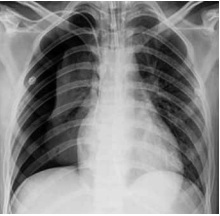
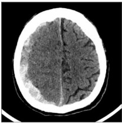

Questão 1 · Prof ilaxias Ferro Vitaminas D e A · 4000182568Lactente de 4 meses e 15 dias de vida, em aleitamento materno exclusivo, que foi termo e nasceu com 3250 gramas, não apresenta fatores de risco para ferropenia identi cáveis, comparece para uma consulta de rotina de puericultura na Unidade Básica de Saúde. De acordo com as recentes diretrizes da Sociedade Brasileira de Pediatria, a a rmativa correta sobre a suplementação profilática de ferro para essa criança é:
A deve-se realizar um hemograma para todas as crianças entre quatro e seis meses de vida para a decisão da suplementação profilática.
B não se deve administrar ferro para essa criança nesse momento.
C deve-se administrar 1 mg/kg/dia de ferro elementar para todas as crianças dessa idade.
D deve-se administrar 2 mg/kg/dia de ferro elementar para todas as crianças dessa idade.
E deve-se administrar 5 mg/kg/dia de ferro elementar para todas as crianças dessa idade.
Questão 2 · Emergências Pediátricas Parada Cardiorrespiratória PCR e Arritmias na Emergência · 4000182567Durante um passeio no m de semana, você presencia a retirada por um leigo de uma criança, de, aproximadamente, 4 anos que afogou-se em uma piscina. A mãe está desesperada e chorando muito, pedindo socorro. Você estimula a criança e ela não responde. Sendo você o único pro ssional de saúde quali cado para realizar um atendimento inicial de emergência no local, os seguintes procedimentos são indicados, de forma sistemática segundo as atuais recomendações internacionais e na ordem em que são apresentados:
A pedir para chamar ajuda, verificar respiração e, se não houver, iniciar 5 ventilações boca-a-boca, observando se há retorno da respiração ou movimentos do corpo. Caso não haja sinais de circulação, iniciar 30 compressões torácicas, alternando com 2 ventilações.
B pedir para chamar ajuda, verificar respiração e, se não houver, iniciar 5 ventilações boca-a-boca, observando se há retorno da respiração ou movimentos do corpo. Caso não haja sinais de circulação, iniciar 15 compressões torácicas, alternando com 2 ventilações.
C pedir para chamar ajuda, verificar respiração e, se não houver, iniciar compressões torácicas e ventilação boca-a- boca, em uma relação 15 compressões para 1 ventilação.
D pedir para chamar ajuda, colocar a vítima de barriga para baixo e iniciar compressões dorsais, observando se há eliminação de água pela boca e nariz da criança.
E pedir para chamar ajuda, verificar pulso e, se não houver, iniciar 30 compressões torácicas, alternando com uma ventilação boca-a-boca.
Revisar: possível letra faltando em enunciado
Questão 3 · Parasitoses · 4000182566Uma menina de 9 anos é trazida ao consultório com queixa de corrimento vaginal e prurido anal há uma semana. Durante a inspeção da região perineal, você observa a presença de um verme esbranquiçado, de, aproximadamente, 0,5 cm de comprimento, de espessura pouco maior que uma linha, apresentando discretos movimentos na região da fúrcula vaginal. Em relação à terapêutica, assinale a alternativa correta.
A Remoção manual do verme e anti-histamínico por 3 dias.
B Prescrição de metronidazol por 5 dias.
C Prescrição de albendazol.
D Coleta de cultura da secreção vaginal e aplicação de creme vaginal de miconazol.
E Coleta de protoparasitológico de fezes, aguardando resultado para a prescrição específica de um anti- - helmíntico.
Questão 4 · Epinef rina · 4000182565Escolar, sexo masculino, 7 anos de idade é levado ao Pronto-Socorro, após um jantar com pais em um restaurante de comida japonesa, referindo que, há cerca de 30 minutos apresenta-se agitado e com discreto edema de lábios. Apresenta certo grau de rouquidão e a ausculta pulmonar tem murmúrio vesicular presente com alguns poucos sibilos. Apresenta também uma pequena placa urticariforme em abdome. Pressão arterial: 90 x 60 mmHg. Qual a conduta inicial prioritária?
A Inaloterapia com broncodilatador.
B Acesso venoso e expansão com solução salina.
C Adrenalina intramuscular.
D Corticosteroide intravenoso.
E Anti-histamínico por via oral.
Questão 5 · Tratamento · Otite Média Aguda · 4000182564Lactente, sexo masculino, 7 meses de idade é levado ao Pronto-socorro com quadro de febre baixa (38 ºC) há dois dias e coriza hialina. Não está aceitando alimentação e está choroso. Regular aceitação de líquidos. Ao exame: hidratado, eupneico, com temperatura de 38 ºC. Não há hiperemia em orofaringe posterior e tonsilas. A otoscopia evidencia, bilateralmente, hiperemia da membrana timpânica com abaulamento bilateral e reflexo luminoso presente. A ausculta pulmonar é normal e o exame físico restante não mostra outros achados anormais. Com base na principal hipótese diagnóstica, a conduta para esse caso é o uso de
A analgésico/antipirético, apenas.
B amoxicilina.
C prednisolona.
D ceftriaxone.
E penicilina benzatina.
Questão 6 · Dermatite atópica · 4000182563Lactente de 11 meses, sexo masculino, apresenta quadro de irritabilidade e intenso prurido há cerca de 3 meses em pele. Apresenta placas eritematodescamativas nas regiões malares, poupando o maciço centro facial, sem indícios de contaminação bacteriana secundária e algumas lesões semelhantes em fossa antecubital, bilateralmente. Apresenta pele muito seca. Mãe refere irmão mais velho com lesões similares, além de asma e rinite. Qual a hipótese diagnóstica?
A Dermatite atópica.
B Impetigo não bolhoso.
C Tinha de face.
D Escabiose.
E Dermatite seborreica.
Questão 7 · Ref luxo Gastroesof ágico RGE · 4000182562Lactente, com 5 meses de idade, sexo masculino, apresentando frequentes e recorrentes episódios de vômitos e regurgitações até 1 hora após suas mamadas de leite materno, único alimento que tem recebido desde o nascimento. Apresenta algum grau de irritação (choro) e desconforto. Apresenta boa evolução ponderal, não apresenta manifestações respiratórias nem qualquer outro sinal de alarme, mas os pais estão muito preocupados. Qual a afirmativa correta sobre o tratamento dessa condição nessa criança?
A Bromoprida e metoclopramida são seguras para uso regular e devem ser prescritas para melhorar as manifestações clínicas.
B Se não houver melhora com medidas comportamentais, como evitar hiperalimentação (duração, frequência e quantidade de leite materno) e atentar-se ao posicionamento correto da criança durante e após alimentação, a mãe deve ser orientada a fazer uma dieta restrita em leite de vaca.
C Mesmo a mãe estiver desejando manter a amamentação materna exclusiva, o leite materno deverá ser substituído por uma fórmula infantil espessada.
D A radiografia contrastada de esôfago, estômago e duodeno é, nessa faixa etária, pela sua facilidade de execução e custo, o padrão-ouro para o diagnóstico de doença do refluxo gastroesofágico.
E Supressão ácida não deve ser realizada em lactentes com menos de 12 meses de vida pelo risco de aumento de translocação bacteriana.
Questão 8 · Marcos Importantes · 4000182561Na consulta de rotina de um lactente, do sexo feminino, com 7 meses e 5 dias de vida, que nasceu a termo, observa-se que ela apresenta sustentação da cabeça, capacidade de localizar um som emitido proximamente a ela, mudar de decúbito no leito e passar um objeto de uma mão para outra. Contudo, a criança não consegue sentar-se sem apoio totalmente (às vezes tomba para o lado), não engatinha, não fala palavras-frase e parece incomodado diante da presença do médico (estranha e chora). Apresenta reflexo de Moro presente simetricamente. Qual informação a seguir sobre o encaminhamento desse bebê para uma avaliação neurológica especializada é correta?
A As características apresentadas por essa criança apontam um desenvolvimento adequado.
B Não sentar completamente sem apoio justifica ser avaliado por um neuropediatra.
C Apresentar o reflexo de Moro bilateralmente justifica ser encaminhado para uma avaliação mais especializada.
D Não engatinhar indica um risco para o desenvolvimento.
E O comportamento de estranhar o médico e chorar indicam avaliação comportamental mais especializada.
Questão 9 · Convulsão f ebril · 4000182560O diagnóstico de convulsão febril em Pediatria é fundamentalmente clínico e, para tanto, alguns critérios devem ser considerados. Dos critérios a seguir, qual tem maior associação com convulsão febril?
A Convulsão em um escolar com 9 anos de idade.
B Presença de crise convulsiva generalizada.
C Crise convulsiva que recorre 2 vezes nas primeiras 24 horas do primeiro episódio.
D Crise convulsiva febril antecedida por uma crise convulsiva afebril.
E Convulsão associada à presença do sinal de Kernig.
Questão 10 · Avaliação do Crescimento · Curvas de Crescimento · 4000182559Durante a avaliação antropométrica e nutricional de uma escolar, com 6 anos de idade, do sexo feminino, observam-se os seguintes parâmetros: peso no escore-z de +1,25, estatura no escore-z +0,37 e índice de massa corporal no escore-z +1,43 e relação cintura/altura de 0,5. Sobre a classificação nutricional dessa criança, é correto afirmar que ela está
A eutrófica.
B com risco de sobrepeso.
C com sobrepeso.
D com obesidade.
E com obesidade grave.
Questão 11 · Quadro clínico · 4000182558Lactente do sexo feminino, 22 dias de vida, em aleitamento materno exclusivo, vem apresentando evacuações com fezes amolecidas, por vezes líquidas, explosivas, de coloração amarelada, logo após as mamadas. Apetite preservado e boa pega na mama materna. Exame físico sem alterações. Peso mantido no percentil 15 desde a alta da maternidade. A conduta mais indicada é
A manter o leite materno exclusivamente e propor suspensão da ingestão de leite pela mãe.
B complementar temporariamente o leite materno com uma fórmula de partida.
C complementar temporariamente o leite materno com uma fórmula sem lactose.
D suspender o leite materno temporariamente e oferecer fórmula sem lactose.
E manter o leite materno exclusivamente e sem qualquer mudança na dieta materna.
Questão 12 · Síndrome Hemolítico Urêmica SHU · 4000182557Pré-escolar, sexo masculino, 3 anos de idade, foi levado à emergência pediátrica, por apresentar-se pálido e com diminuição do volume urinário. A mãe relata que, há cerca de 1 semana, a criança apresentou febre, vômitos e diarreia com alguns laivos sangue, quadro que se resolveu espontaneamente. Ao exame, a criança apresenta-se desidratada, descorada 3/4+, edemaciada e irritada. São solicitados exames que mostram: hemograma com esquizócitos, Hb de 6,0 g/dL, Ht de 18%, leucócitos de 20000/mm³ e plaquetas de 40000/mm3 ; ureia de 90 mg/dL e creatinina de 2,2 mg/dL%. O exame de urina apresenta 13 leucócitos/campo, 20 hemácias/campo e cilindros hemáticos. A criança foi internada e, no segundo dia, apresentou uma crise convulsiva. A ureia já era de 150 mg/dL e a creatinina de 3,0 mg/dL. Qual o diagnóstico mais provável e o tratamento para essa criança?
A Sepse por infecção urinária; ceftriaxone.
B Insuficiência renal aguda por desidratação; expansão com soro fisiológico.
C Insuficiência renal aguda por anemia; concentrado de hemácias.
D Insuficiência renal crônica pela infecção urinária; ceftriaxone.
E Insuficiência renal aguda por síndrome hemolítico- -urêmica; tratamento dialítico.
Questão 13 · Síf ilis congênita · 4000182556Lactente, sexo masculino, 30 dias de vida é trazido pela avó pela primeira vez na Unidade Básica de Saúde para controle do peso que segundo ela, não está indo bem. A avó, preocupada, informa que a mãe do bebê tem 15 anos, fez 2 consultas de pré-natal tardiamente, por ter escondido a gravidez da família, sem ter realizado nenhum exame laboratorial. O bebê está recebendo leite materno exclusivo. Diariamente, há cerca de 5 dias, tem apresentado choro muito forte. Ao exame físico, está eupneica, emagrecida, com mucosas pálidas, ictérica até cicatriz umbilical e com diversas lesões papulares avermelhadas em tórax e abdome. A ausculta cardíaca e pulmonar é normal. O abdome está pouco distendido e há hepato e esplenomegalia. A criança mostra-se irritada, com reflexo de Moro assimétrico e com diminuição de movimentos do braço esquerdo. A hipótese diagnóstica mais provável é
A hipotireoidismo.
B distúrbio metabólico.
C osteogênese imperfeita.
D toxoplasmose congênita.
E sífilis congênita.
Questão 14 · Tratamento · 4000182555Lactente com 8 meses de vida é admitido no hospital com história de 2 dias de febre alta, diminuição da aceitação alimentar, vômitos sem diarreia e letargia. Realiza-se uma punção lombar e a análise do líquor (LCR) demonstra 1000 leucócitos/mL, com absoluta predominância de segmentados e bastões, baixos níveis de glicose e elevados níveis de proteínas. Não se têm ainda resultados de baciloscopia ou PCR do LCR. O tratamento empírico inicial mais indicado é:
A apenas sintomáticos para febre e vômitos, sem introdução de antibióticos.
B sintomáticos para febre e vômitos + aciclovir.
C sintomáticos para febre e vômitos + dexametasona + penicilina cristalina.
D sintomáticos para febre e vômitos + penicilina cristalina.
E sintomáticos para febre e vômitos + vancomicina + ceftriaxone + dexametasona.
Questão 15 · Passos iniciais · Reanimação neonatal em maiores de 34 semanas · 4000182554Durante a assistência de um parto expulsivo, em uma gestante com 38 semanas de gestação, sem intercorrências identi cadas no período pré-natal, após receber o bebê do obstetra, verifica-se que a criança não está chorando e nem respirando. Após realizar os passos iniciais de secagem e posicionamento adequado da criança no berço aquecido de reanimação constata-se que ela ainda não respira e que a frequência cardíaca em 6 segundos é de cerca de 13 batimentos por minuto. Inicia-se a ventilação com pressão positiva, com ar ambiente, monitorizando a criança (oximetria e monitor cardíaco). Após 30 segundos de ventilação com balão e máscara, a criança já respira espontaneamente, a frequência cardíaca é de 130 batimentos por minuto (monitor) e a oximetria de 79%. Qual a próxima etapa na condução desse caso?
A Interromper a ventilação com pressão positiva, encaminhar a criança para a mãe, enquanto realiza os procedimentos de rotina da maternidade.
B Interromper a ventilação com pressão positiva, oferecer oxigênio com máscara sem pressão positiva para manter saturação de oxigênio maior que 92%, enquanto encaminha a criança para mãe.
C Checar a técnica da ventilação com pressão positiva, mantendo-a sem a suplementação de oxigênio, no berço de reanimação até que a saturação de oxigênio seja maior que 92%.
D Checar a técnica da ventilação com pressão positiva, mantendo-a com suplementação de oxigênio de 30%.
E Checar a técnica da ventilação com pressão positiva, mantendo-a com suplementação máxima de oxigênio de 60%.
Questão 16 · Avaliação do Crescimento · Curvas de Crescimento · 4000182553Durante uma consulta de puericultura, os pais referem preocupação com o crescimento de sua lha, com 3 meses de idade. Nascida a termo, 39 semanas, comprimento = 50 cm, peso de nascimento = 3250 g, peso da alta da maternidade = 3000 g, perímetro cefálico (PC) = 35 cm. Está em aleitamento materno exclusivo e os pais acreditam que o leite está “fraco”, pois a criança não está crescendo bem. Os dados antropométricos atuais são: peso = 4,3 kg, estatura = 58,5 cm, PC = 41 cm. Assinale a alternativa correta.
A Essa criança está crescendo adequadamente, segundo os ganhos de peso, estatura e PC esperados para a idade.
B Essa criança ganhou muito peso para a idade e cresceu adequadamente em estatura; o PC está aquém do esperado para a idade.
C Esse lactente apresenta peso e estatura adequados, porém já ao nascimento apresentou PC baixo, compatível com microcefalia leve ao nascimento.
D Essa criança apresenta estatura adequada, porém, ao nascimento, teve perda ponderal excessiva, que explica o déficit de peso que apresenta nessa consulta.
E Esse bebê cresceu bem em estatura, porém o ganho de peso esperado por dia está abaixo do adequado para a idade.
Questão 17 · Tuberculose · Diagnóstico · Tratamento · 4000182552Escolar, sexo masculino, de 6 anos de idade, comparece na Unidade Básica de Saúde (UBS), após o diagnóstico de tuberculose em sua avó, que cuida da criança diariamente e que iniciou o tratamento há 35 dias. O menino não apresenta tosse, febre e nem qualquer outro sintoma e foi vacinado com BCG ao nascer. A conduta mais adequada a ser seguida é
A solicitar radiografia do tórax e teste tuberculínico; se a radiografia for normal e o teste tuberculínico de 7 mm, repetir o teste.
B solicitar teste tuberculínico; se 12 mm, iniciar o tratamento com esquema tríplice, conforme norma vigente no país, independentemente do achado radiológico.
C solicitar teste tuberculínico; se 8 mm, sem achados radiológicos, indicar tratamento da infecção latente.
D iniciar tratamento profilático com hidrazida até 3 meses após a negativação do escarro da avó.
E solicitar teste tuberculínico; se 3 mm, sem achados radiológicos, indicar tratamento da infecção latente.
Questão 18 · Calendário inf antil · 4000182551Lactente, 13 meses de idade, sexo feminino, procura Unidade Básica de Saúde para uma consulta de rotina e seu pediatra verifica que a criança recebeu todas as vacinas recomendadas até os 9 meses de idade e indica a atualização das vacinas preconizadas para essa idade. De acordo com o Programa Nacional de Imunizações, que vacinas deverá receber nesse dia?
A Anti-pneumocócica-10 valente, anti-meningococócica ACWY e vacina tríplice viral (sarampo, caxumba e rubéola).
B Anti-pneumocócica-10 valente, anti-meningococócica ACWY e tetravalente viral (sarampo, caxumba, rubéola e varicela).
C Vacina para a poliomielite oral, anti-pneumocócica-10 valente, anti-meningococócica C e tríplice viral (sarampo, caxumba e rubéola).
D Anti-pneumocócica-10 valente, anti-meningococócica C e tríplice viral (sarampo, caxumba e rubéola).
E Anti-pneumocócica-10 valente, anti-meningococócica C, tríplice viral (sarampo, caxumba e rubéola) e varicela.
Questão 19 · Maus tratos à crianças e adolescentes · 4000182550Você está atendendo um lactente, sexo feminino, com seis meses de idade, em uma Unidade Básica de Saúde, acompanhado pelos seus pais que se queixam de choro, irritabilidade e hematomas em nádegas e em membros inferiores. Quando se pergunta o motivo do aparecimento dos hematomas, a mãe refere que a criança subiu no sofá e caiu sentado no chão de madeira, batendo suas pernas na mesa de centro da sala. A mãe refere que não estava próxima e não conseguiu impedir a queda. Das seguintes afirmativas, assinale aquela é correta para o adequado manejo desse caso.
A Deve-se orientar os pais sobre a colocação de um tapete no chão e protetores nos cantos dos móveis que atenuariam os ferimentos desse acidente.
B Deve-se orientar que os pais devem realizar vigilância constante e próxima de crianças nessa idade.
C O médico deve solicitar coleta de hemograma completo com plaquetas e coagulograma antes de dar alta para a criança.
D O médico deve internar a criança e acionar o sistema de comunicação de possível prática de maus-tratos contra a criança.
E O médico deve descartar a possibilidade de púrpura de Henöch-Schönlein solicitando uma prova de atividade inflamatória e avaliando a possibilidade de dor abdominal.
Questão 20 · Alteração do sítio de ligação · 4000182549Lactente com 24 meses de vida é admitido no hospital com história de 3 dias de febre, diminuição da aceitação alimentar, taquipneia e letargia. Realiza-se uma radiogra a de tórax que evidencia um padrão de consolidação com derrame pleural. Realiza-se a punção torácica e, na análise do líquido pleural purulento, a baciloscopia evidencia diplococos Gram-positivos com confirmação por PCR de da cultura desse material biológico observa-se o crescimento de inibitória mínima indicando resistência parcial desse agente à penicilina. Qual dos seguintes mecanismos é o responsável pela resistência antibiótica e deve ser considerado para a substituição da antibioticoterapia desse paciente?
A Produção de beta-lactamase.
B Alteração da proteína ligadora de penicilina.
C Mecanismos de efluxo.
D Mudança na permeabilidade da membrana bacteriana.
E Alterações ribossomais.
Questão 21 · Colangiopancreatograf ia Retrógrada Endoscópica CPRE · 4000182548Na maioria dos casos de coledocolitíase, os cálculos formam-se no interior da vesícula biliar e depois podem migrar para a árvore biliar, podendo se apresentar clinicamente de diversas formas. Atualmente, o método mais utilizado no Brasil e no mundo para o tratamento da coledocolitíase é:
A colangiorressonância magnética.
B colangiopancreatografia retrógrada endoscópica.
C dissolução dos cálculos com uso de ácido ursacólico.
D coledocotomia por via laparoscópica.
E litotripsia extracorpórea (LECO).
Questão 22 · Preceitos Básicos em Técnica Operatória · Tipos de Sutura e Suas Principais Características · 4000182547Há décadas, os cirurgiões buscam reduzir as complicações da parede abdominal após laparotomias de urgência. Em relação à síntese cirúrgica, ainda existe grande discussão na literatura acerca do fechamento da parede abdominal. No entanto, atualmente, a sutura da parede mais aceita é:
A chuleio contínuo simples, envolvendo toda a parede abdominal com fio absorvível de média duração (ácido poligaláctico).
B pontos separados em U, envolvendo subcutâneo e aponeurose com fio monofilamentar orgânico inabsorvível (poliglicaprona).
C contínua, envolvendo apenas a aponeurose com fio monofilamentar de absorção lenta (polidioxanona) com técnica
D pontos interrompidos em Donatti, envolvendo aponeurose, subcutâneo e pele com fio multifilamentar sintético forte (seda 5-0).
E manter a relação entre o comprimento do fio utilizado e o comprimento da incisão da pele menor que 4.
Questão 23 · Hérnia de Spiegel · 4000182546Com relação às hérnias incomuns da parede abdominal anterior, assinale a alternativa correta.
A A maioria das hérnias de Spiegel é de pequeno tamanho (1 a 2 cm de diâmetro) e se desenvolve durante a quarta até a sétima década de vida.
B O paciente com hérnia lombar pode apresentar evidência de compressão neurológica, que causa dor na face anteromedial da coxa (sinal de Howship-Romberg).
C As hérnias obturatórias através do triângulo lombar inferior (triângulo de Grynfeltt) são as mais comuns.
D As hérnias perineais primárias são mais frequentes, e as secundárias são mais raras.
E A hérnia isquiática é uma causa frequente de neuralgia ciática.
Questão 24 · Carcinoma espinocelular e lesões prémalignas · Carcinoma espinocelular · 4000182545Mulher de 70 anos sofreu queimadura na região anterolateral da coxa direita há 30 anos. Apresenta atualmente quadro de tumoração ulcerada na região, de crescimento progressivo e desordenado sobre a área da cicatriz antiga, com linfonodomegalia inguinal à direita palpável. Qual é a hipótese diagnóstica compatível com o caso?
A Cicatriz hipertrófica.
B Carcinoma basocelular.
C Cicatriz queloideana.
D Fibroma inespecífico.
E Carcinoma espinocelular.
Questão 25 · Cirurgia · Orof aringe · 4000182544Homem de 65 anos apresenta rouquidão há 2 meses. Refere ser etilista e tabagista. Há 8 meses, refere nódulo no pescoço à esquerda. Ao exame, linfonodo palpável, endurecido, de 4,5 cm em região submandibular esquerda. Sem alterações na oroscopia. Com relação a esse caso, assinale a alternativa correta.
A A hipótese diagnóstica mais provável é adenoma pleiomórfico de parótida esquerda.
B Metástase linfonodal de câncer de tireoide traz prognóstico muito desfavorável ao paciente.
C O tumor descrito no enunciado é nódulo de Virchow, característico do câncer de faringe.
D O tumor primário de epiglote é uma hipótese a ser considerada pela cronologia dos sintomas.
E O paciente apresenta metástase linfonodal de carcinoma medular de paratireoides.
Questão 26 · Cirurgia · Acalásia Megaesôf ago · Acalásia e o Câncer de Esôf ago · 4000182543A acalasia é o distúrbio da motilidade esofágica mais bem compreendido atualmente. Tendo em vista essa patologia, assinale a alternativa correta.
A O adenocarcinoma é o tipo de câncer mais comum identificado com acalasia.
B A tríade clássica de sintomas da acalasia consiste em odinofagia, vômitos e disfonia por refluxo gastroesofágico.
C Durante um período de 20 anos, um paciente terá uma probabilidade de até 8% de desenvolver carcinoma.
D Um estreitamento distal denominado como a clássica aparência de “bico de pássaro” é detectado pela endoscopia digestiva alta.
E A pHmetria é o exame padrão-ouro para o diagnóstico da acalasia.
Questão 27 · Malf ormações da Parede Abdominal · Onf alocele · 4000182542Com relação às anormalidades congênitas da parede abdominal, assinale a alternativa correta.
A Dos lactentes que nascem com onfalocele, de 50% a 60% terão anomalias congênitas concomitantes.
B Na gastrosquise, o intestino não é coberto por pele ou âmnio. E não há risco de isquemia intestinal e necrose.
C As hérnias umbilicais na criança geralmente são irredutíveis e, em geral, ocorrem na margem inferior do anel umbilical.
D A persistência da extremidade intestinal do ducto onfalomesentérico resulta em uma anomalia conhecida como divertículo de Zenker
E As hérnias umbilicais adquiridas geralmente se resolvem espontaneamente e tendem a diminuir de tamanho progressivamente.
Questão 28 · Condução Clínica · 4000182541Homem, 55 anos, com diagnóstico de cirrose hepática com endoscopia prévia realizada há 6 meses que mostrava presença de varizes de esôfago, dá entrada no Pronto-Socorro com quadro de hematêmese e melena com PA: 90 x 60 mmHg, FC:128 bpm. A conduta a ser tomada inicialmente é:
A introdução de IBP (inibidor de bomba de prótons) endovenoso, expansão plasmática com solução salina e droga vasoconstritora (noradrenalina).
B reposição hemodinâmica cuidadosa, introdução de droga vasoconstritora (terlipressina ou octreotide) e solicitar endoscopia digestiva alta após estabilização.
C introdução de lactulona para prevenção da encefalopatia, transfusão de plasma e plaquetas, seguida de endoscopia digestiva alta
D passagem de balão gastroesofágico (Sengstaken – Blakemore) e utilização de drogas vasoativas até estabilização hemodinâmica.
E indicação de tratamento cirúrgico imediato pela técnica de anastomose esplenorrenal distal (Warren).
Questão 29 · Neoplasias do Apêndice Cecal · 4000182540As neoplasias do apêndice, embora raras, necessitam de tratamento apropriado. Uma neoplasia apendicular não antecipada pode ser encontrada durante qualquer operação eletiva ou de emergência. Com relação a esse tema, assinale a alternativa correta.
A Foi reportado que as neoplasias do apêndice são identificadas em 7% a 17% das peças de patologia após apendicectomias.
B As neoplasias do apêndice são responsáveis por 4% a 10% de todas as neoplasias malignas gastrointestinais.
C O adenocarcinoma é o tumor primário mais frequentemente identificado no apêndice.
D Os tumores carcinoides são normalmente lesões grandes, pouco circunscritas, localizadas no aspecto mais proximal do apêndice.
E Estima-se que 50% das neoplasias apendiculares se apresentam como apendicite e são diagnosticadas no exame patológico da peça cirúrgica.
Questão 30 · Fatores de Risco · 4000182539O tratamento do câncer retal mudou de maneira significativa nos últimos 25 anos, e existe controvérsia considerável hoje em dia com relação ao papel preciso da operação, radioterapia e quimioterapia e o tempo ideal de cada modalidade com relação às outras. Embora a informação dos ensaios clínicos tenha proporcionado dados que apoiam o tratamento multimodal do câncer retal, os critérios para a seleção de pacientes ainda são controvertidos. No entanto, algumas generalidades podem ser feitas. Assim sendo, assinale a alternativa correta.
A A quimioterapia que mostrou eficácia no cenário adjuvante no tratamento do câncer de cólon não traz benefícios no cenário adjuvante para pacientes com câncer retal.
B A terapia neoadjuvante é uma substituta para o procedimento cirúrgico, desde que realizada adequadamente.
C O sintoma mais comum de câncer retal é a diarreia mucossanguinolenta com enterorragia.
D Não há indicação de exame colonoscópico completo, pois o câncer retal geralmente é isolado e sem presença de tumores sincrônicos no cólon.
E A radiação pré-operatória (combinada com quimioterapia) é utilizada nos cânceres retais distais localmente avançados (até 10 a 15 cm da borda anal, estágio II. ou maior).
Questão 31 · Tratamento · 4000182538Com relação às diferentes técnicas de hemorroidectomias, assinale a alternativa correta.
A Na hemorroidectomia fechada (Milligan-Morgan), o local de excisão é suturado com fio absorvível e sutura contínua.
B Os índices de estenose anal pós-operatória são alarmantes, por volta de 30% dos casos.
C A hemorroidectomia aberta (Ferguson) difere no ponto em que o local de excisão não é fechado, mas deixado aberto.
D A hemorroidectomia fechada (Ferguson) consiste na excisão simultânea das hemorroidas internas e externas.
E As complicações pós-operatórias incluem incontinência fecal (30% dos pacientes), infecção (350%) e hemorragia (25%).
Questão 32 · Fatores de Risco · Colecistectomia · 4000182537Mulher de 46 anos procura atendimento médico com relato de dor epigástrica intensa há 3 dias, que se irradia para hipocôndrio e anco direitos, associada a náuseas, vômitos e febre de 37,4 ºC. No interrogatório complementar, refere intolerância a alimentos gordurosos. Nega icterícia. A equipe médica solicitou rX de abdome e ultrassonogra a abdominal, cujo resultado foi vesícula em porcelana. Diante dos resultados dos exames e do quadro clínico da paciente, assinale a alternativa correta.
A O tratamento da paciente deve ser clínico, com uso de antibióticos e sintomáticos ambulatorial.
B A paciente pode receber alta sem indicação de cirurgia, pois a patologia não apresenta evolução desfavorável.
C Há indicação de colecistectomia, pois a vesícula em porcelana é condição que predispõe ao câncer da vesícula biliar.
D Deve-se indicar para a paciente colangiorressonância para melhor elucidação diagnóstica pela presença da tríade de Charcot.
E Há indicação de punção percutânea da vesícula biliar para coleta da bile e análise da celularidade e microbiológica.
Questão 33 · Pneumotórax espontâneo · Pneumotórax Simples · 4000182536Homem de 38 anos, obeso mórbido, dá entrada no Pronto-Socorro por descompensação diabética, e após avaliação inicial, recebe indicação de internação para hidratação por via intravenosa por desidratação moderada e tratamento clínico adequado. Após as condutas iniciais tomadas na sala de emergência, apresenta dispneia intensa súbita e o médico solicita o rX demonstrado a seguir. Em face do exposto, assinale a alternativa correta.

A Trata-se de pneumotórax à direita devido a complicações de acesso venoso central.
B Além do acesso venoso central em subclávia direita, também apresenta tubo orotraqueal.
C Há presença de condensação pulmonar em área peri-hilar à direita.
D Paciente apresenta calcificação do botão aórtico com provável aneurisma.
E O índice cardiotorácico do paciente é 0,7, o que indica normalidade da área cardíaca.
Questão 34 · Tratamento · Diagnóstico Clínico · 4000182535Homem de 28 anos sofreu acidente com linha de cerol enquanto andava de bicicleta e deu entrada na emergência apresentando ferimento cervical com sangramento cervical abundante e escape de ar em grande quantidade pelo ferimento. Sinais vitais: saturação O₂ : 79%; PA: 90 x 55 mmHg; FC: 144 bpm; FR: 28 mrpm. Após as medidas iniciais na sala de emergência, a conduta mais adequada esse paciente deverá ser:
A solicitar endoscopia digestiva para reparo endoscópico da lesão esofágica.
B solicitar angiotomografia cervical para avaliar melhor lesões dos vasos cervicais.
C indicar cervicotomia exploradora por provável lesão de via aérea e contenção do sangramento.
D internar o paciente na UTI e solicitar RX cervical em 3 posições.
E intubar o paciente e drenar o pneumotórax instalado sob selo d’água.
Questão 35 · Cenário Atual e Princípios Básicos do ATLS · Atendimento Hospitalar ATLS · 4000182534Ao chegar na sala de emergência para atender um paciente politraumatizado, de acordo com o protocolo ATLS, a primeira providência a ser tomada pelo(a) plantonista deverá ser:
A colocar a máscara laríngea sob sedação com succinilcolina, colocar o colar cervical e administrar ventilação com ambú-máscara e O₂ 15 L/minuto.
B manter restrição dos movimentos da coluna cervical, aspirar sangue da boca, verificar o estado das vias aéreas e instalar máscara de O₂ 15 L/minuto.
C realizar intubação nasotraqueal do paciente com auxílio do Airtraq, colocar colar cervical e ventilar sob pressão positiva com O₂ de alto fluxo.
D realizar drenagem de hemopneumotórax, se presente, seguida de máscara de O₂ em alto fluxo, acessos venosos centrais e exposição do paciente.
E solicitar monitorização do paciente, pedir para alguém da equipe segurar a sua cabeça, aspirar secreções da boca e ofertar O₂ 15 L/min. com cateter nasal.
Questão 36 · Nutrição em Cirurgia e Recuperação PósOperatória · 4000182533O objetivo primordial do projeto ACERTO, atualmente, é:
A aprimorar e implementar ações que resultem na Aceleração da Recuperação Total Pós-Operatória.
B ser um programa construído de modo multidisciplinar com intuito de diminuir a dor pós-operatória.
C preparar melhor os futuros cirurgiões com programas de treinamento em simulação realística.
D treinamento extensivo em cirurgia robótica, por meio de simuladores e animais.
E facilitar a inclusão dos pacientes cirúrgicos em mutirões nos hospitais atendidos pelo SUS.
Questão 37 · Fios de Sutura · 4000182532Paciente de 30 anos é submetido a uma apendicectomia por via aberta (convencional). Após a ressecção do apêndice, o coto apendicular foi ligado com o mono lamentar inabsorvível e, a seguir, sepultado com sutura em bolsa com o absorvível sintético de média absorção (90 dias). Os fios usados para esse procedimento devem ser, respectivamente:
A algodão 3-0 e poligalactina 4-0.
B categute cromado 3-0 e seda 3-0.
C polipropileno 3-0 e categute simples 3-0.
D categute simples 3-0 e categute cromado 3-0.
E polipropileno 3-0 e ácido poligaláctico 3-0.
Questão 38 · Cicatrização de Feridas · 4000182531Com relação às fases da cicatrização de feridas, assinale a alternativa correta.
A As três fases da cicatrização de feridas são a infecção, a regeneração e a maturação.
B A escara, ou exsudato fibrinoso, reflete a fase proliferativa.
C A margem de contração ou de avanço faz parte da fase de inflamação.
D Todas as três fases podem ocorrer simultaneamente.
E As fases não podem sobrepor-se com seus processos individuais.
Questão 39 · Diagnóstico · Tratamento · 4000182530Homem, 62 anos, chegou ao pronto atendimento com queixa de dor epigástrica intensa há 24 horas, evoluindo para dor abdominal difusa, de forte intensidade (9/10) há 5 horas. Refere ter tido muita dor no joelho na última semana, tendo feito uso de anti-inflamatórios não esteroidais nos últimos 6 dias por conta própria. Antecedentes pessoais de hipertensão arterial sistêmica e acidente vascular encefálico (sem sequelas), em uso de Losartana e Varfarina. Ao exame clínico, encontra-se pálido, sudoreico, descorado +/4+, anictérico e consciente. Sinais vitais: FC 108 bpm, FR 20 irpm, PA 80 x 50 mmHg, Tax 37,9 ºC. Exame do abdome revelou ruídos hidroaéreos ausentes, bastante doloroso à palpação, com descompressão brusca presente. Aparelho cardiovascular sem alterações, aparelho respiratório com murmúrio diminuído nas bases, sem ruídos adventícios. A abordagem mais indicada para esse paciente, nesse momento, deverá ser a solicitação de
A radiografia de abdome e tórax; endoscopia digestiva para tratamento de úlcera péptica hemorrágica.
B radiografia de abdome e tórax; tomografia computadorizada de abdome total com triplo contraste.
C tomografia computadorizada de abdome total com duplo contraste; encaminhamento para a UTI.
D radiografia de abdome e tórax; encaminhamento para laparotomia exploradora no caso de pneumoperitôneo.
E ultrassonografia de abdome superior; realização de colecistectomia por videolaparoscopia sob anestesia geral.
Questão 40 · Hematoma Subdural · Hematoma Subdural Agudo · 4000182529Homem de 45 anos, vítima de atropelamento por caminhão, foi trazido ao pronto atendimento. Na avaliação inicial ao politraumatizado, estava em rebaixamento de nível de consciência (Escala de Coma de Glasgow = 5), sendo prontamente intubado. Estava hipertenso e com pupilas anisocóricas. Realizado atendimento inicial a contento. Na tomogra a de crânio, foi visualizada a imagem demonstrada a seguir. Em face do exposto, o diagnóstico do paciente é:

A Hematoma extradural.
B Hematoma subdural.
C Contusão intracerebral.
D Lesão axonal difusa.
E Concussão cerebral.
Questão 41 · Nódulo mamário · Core biópsia · 4000182528Mulher de 44 anos realizou mamogra a de rotina que identi cou em quadrante inferolateral de mama direita, nódulo irregular, mal definido, medindo 1 cm. A ultrasso-nogra a revelou nódulo sólido, verticalizado, com sombra acústica posterior. O procedimento mais adequado para abordagem do nódulo mamário da paciente da questão anterior é
A PAAF.
B BAG (core biopsy).
C BAV (mamotomia).
D ressecção segmentar.
E mastectomia.
Questão 42 · BIRADS 4 · 4000182527Mulher de 44 anos realizou mamogra a de rotina que identi cou em quadrante inferolateral de mama direita, nódulo irregular, mal definido, medindo 1 cm. A ultrassonografia revelou nódulo sólido, verticalizado, com sombra acústica posterior. Assinale a alternativa que indica a categoria de BI-RADS.
A 0
B 1
C 2
D 3
E 4
Questão 43 · Abordagem medicamentosa · 4000182526A paciente do caso anterior apresentou importante perda de massa óssea da coluna vertebral após a suspensão do fármaco recomendado. O fármaco mais adequado para diminuir o risco de fratura por osteoporose nesse caso é
A tibolona.
B raloxifeno.
C tamoxifeno.
D letrozol.
E ciproterona.
Questão 44 · Terapia hormonal · 4000182525M.M.A., 54 anos, relata sintomas vasomotores intensos há cerca de 2 anos. Histerectomizada há 8 anos. Mãe teve fratura por osteoporose e doença cardiovascular. Paciente refere ter temor ao câncer mamário. Sem história de câncer de mama pessoal ou familiar. Assinale a alternativa que indica o fármaco recomendado para a mulher nesse caso.
A Progestagênio via oral.
B Progestagênio tópico.
C Tamoxifeno via oral.
D Estrogênio via vaginal.
E Estrogênio via oral.
Questão 45 · Estrogênio · 4000182524A diagnóstico da síndrome genitourinária da menopausa (SGM) é essencialmente clínico, sendo estabelecido a partir da anamnese e do exame físico. O ressecamento vaginal é o sintoma mais comumente relatado. A respeito dos sintomas, assinale a alternativa que demonstra o hormônio primordialmente deficiente nesses casos.
A Testosterona.
B Prolactina.
C Estrogênio.
D Progesterona.
E FSH.
Questão 46 · Critérios diagnósticos · 4000182523A síndrome dos ovários policísticos (SOP) afeta em torno de 10% das mulheres em idade reprodutiva, e é a principal causa de infertilidade por anovulação. Assinale a alternativa que relata as caracteristicas ultrassonográ cas corretas de preenchimento para o critério diagnóstico de ovários policísticos.
A Presença de 12 ou mais folículos < 10 mm em pelo menos 1 dos ovários.
B Volume ovariano de pelo menos 1 ovário > 12 cc.
C As pacientes podem estar em uso de anticoncepcional hormonal oral durante o período do exame.
D Presença de 10 ou mais folículos < 12 mm em ambos os ovários.
E Volume ovariano de ambos os ovários > 10 cc.
Revisar: possível letra faltando em enunciado
Questão 47 · Diagnóstico · Critérios diagnósticos · 4000182522A síndrome dos ovários policísticos (SOP) afeta em torno de 10% das mulheres em idade reprodutiva, e é a principal causa de infertilidade por anovulação. Assinale a alternativa que demonstra como é feito o diagnóstico da SOP.
A O diagnóstico é sempre feito pela história clínica e pelo exame físico.
B Para o diagnóstico, é necessária a presença de 2 dos seguintes critérios: oligo ou anovulação, sinais clínicos ou bioquímicos de hiperandrogenismo e presença de ovários policísticos em exame de imagem.
C Exames laboratoriais não são necessários, independentemente da situação.
D O dignóstico é feito pela presença de irregularidade menstrual, associada a quadro de obesidade.
E Resistência insulínica e hemoglobina glicada são necessárias para diagnóstico.
Questão 48 · Amenorreia secundária · 4000182521A amenorreia secundária é a ausência de menstruação por, pelo menos, seis meses em mulheres com ciclos irregulares ou por um período equivalente a 3 ciclos menstruais em pacientes que, anteriormente, menstruavam de forma regular. Em relação a essa patologia, assinale a alternativa correta
A Os níveis elevados de prolactina, mesmo que discretos, confirmam o diagnóstico de hiperprolactinemia.
B Um teste de progestina positivo confirma a anovulação estrogênica crônica em pacientes nas quais o beta HCG foi negativo e não houve alterações em níveis de prolactina e TSH.
C O teste de estrogênio e progesterona negativos e FSH normal indicam falência ovariana.
D A dosagem das gonadotrofinas deve ser realizada imediatamente após o teste de estrogênio e progestina.
E Estresse e excesso de atividade física não são fatores de risco.
Questão 49 · Tratamento não hormonal dos sintomas climatéricos · Ovulatório Distúrbios · 4000182520O sangramento uterino disfuncional con figura um quadro clínico frequente, com prevalência maior no início dos ciclos menstruais e na proximidade da menopausa (climatério). Para o controle desse sangramento crônico no período de climatério, dentre os tratamentos a seguir, indique o mais adequado.
A DIU de cobre.
B Tibolona entre o 5º e o 15º dia do ciclo.
C Progestógeno oral entre o 5º e o 25º dia do ciclo.
D Estrogênios em doses crescentes do 5º ao 25º dia do ciclo.
E Progestógeno oral entre 15º e o 25º dia do ciclo.
Questão 50 · Tratamento do sangramento uterino anormal de causa não estrutural · DIU liberador de levonorgestrel · 4000182519M.B.R., 37 anos, tabagista, referindo ciclos menstruais com hipermenorragia e dismenorreia, vem ao consultório solicitando orientação com relação a método anticoncepcional. Assinale a alternativa que indica a prescrição mais adequada.
A Dispositivo intrauterino de cobre.
B Dispositivo intrauterino com progestina.
C Anticoncepcional hormonal oral combinado em regime de uso contínuo.
D Anticoncepcional hormonal oral combinado em regime de uso com pausa.
E Anel vaginal.
Questão 51 · Imunizaçao na gestação · 4000182518Sobre a vacinação da gestante, assinale a alternativa correta
A A vacina contra influenzae é contraindicada na gestação.
B A vacina tríplice bacteriana pode ser aplicada após as 20 semanas de idade gestacional.
C A vacina contra febre amarela tem contraindicação absoluta na gestação.
D A vacina tríplice viral pode ser aplicada após o primeiro trimestre da gestação.
E A vacina contra hepatite B deve ser evitada na gestação.
Questão 52 · Diagnóstico · 4000182517B.O.R., 39 anos, primigesta, IG 8 semanas, veio à primeira consulta de pré-natal, já com exames laboratoriais colhidos há 3 dias. Glicemia de jejum de 94 mg/dL, hemoglobina glicada de 5,2%. Assinale a alternativa que indica a conduta e/ou diagnóstico correto.
A Repetir glicemia de jejum com 24-28 semanas de idade gestacional.
B Solicitar TOTG (teste oral de tolerância à glicose) com 24-28 semanas de idade gestacional.
C Trata-se de
D Trata-se de
E Trata-se de aumento da resistência insulínica. Necessitando-se de TOTG de modo imediato.
Questão 53 · Conduta · Eclâmpsia · PréEclâmpsia · 4000182516Em relação à questão anterior, assinale a conduta mais adequada.
A Rotina pré-eclâmpsia, hidralazina, controle de PA, avaliação da vitalidade fetal.
B Metildopa, solicitar controle de PA ambulatorial, cardiotocografia.
C MgSO₄dose de ataque e manutenção, rotina pré- -eclâmpsia, hidralazina, controle de PA, avaliação da vitalidade fetal.
D MgSO₄ para neuro-proteção fetal, rotina pré-eclâmpsia, hidralazina, cardiotocografia.
E MgSO₄ dose de ataque e manutenção para neuro- -proteção fetal, cesárea de urgência.
Questão 54 · Préeclâmpsia com sinais de gravidade · 4000182515G.M.D., 21 anos, primigesta, IG 33 semanas, deu entrada no PSO com queixa de cefaleia fronto-ocipital, escotomas e náuseas. PA 170 x 110 mmHg. Nega aumento de PA prévio. Ao exame obstétrico: DU ausente, BCF 150 bpm, AU: 29 cm, TV: colo impérvio, bolsa íntegra. Assinale o diagnóstico correto.
A Iminência de eclâmpsia.
B Eclâmpsia.
C Hipertensão gestacional.
D Pré-eclâmpsia superajuntada.
E Hipertensão arterial crônica.
Questão 55 · Placenta prévia PP · Placenta prévia PP · 4000182514R.B.G., 35 anos, GIV PIII 3C A0, IG 35 semanas, deu entrada no PSO com queixa de sangramento vaginal vermelho vivo em moderada quantidade. Nega dor. Nega perda de líquido via vaginal. Ao exame obstétrico: BCF: 140 bpm, DU ausente. AU: 34 cm. Tônus uterino normal. Especular: grande quantidade de sangue vermelho vivo coletado em fórnice posterior. Não realizado toque vaginal. Sem história de coito recente. Assinale a alternativa que indica o diagnóstico mais provável.
A Descolamento prematuro de placenta.
B Placenta prévia.
C Rotura de vasa prévia.
D Rotura do seio marginal.
E Pólipo endocervical.
Questão 56 · Rotura prematura de membranas ovulares RPM · Ginecologia · Conduta na RPM · 4000182513R.F.G., 30 anos, GII PI 1N A0, IG 33 semanas, sem comorbidades, deu entrada no PSO referindo perda de líquido via vaginal em grande quantidade, confirmado pelo exame especular. Nega dor tipo contrações uterinas. Ao toque vaginal: colo 1 polpa, grosso e posterior. Cardiotocografia normal. Ao ultrassom: ILA normal. Frente ao caso, assinale a conduta correta.
A Alta com orientações de repouso e retorno se contrações uterinas.
B Internação para interrupção da gestação via alta, logo após a corticoterapia.
C Internação para interrupção da gestação via baixa, logo após a corticoterapia.
D Internação para exames, corticoterapia, controle de vitalidade e indução do trabalho de parto com 34 semanas de idade gestacional.
E Antibioticoterapia via oral, controle de vitalidade e alta para programação de parto após 37 semanas de idade gestacional.
Questão 57 · Gestação ectópica · 4000182512Com base na questão anterior, assinale o diagnóstico mais provável.
A Ameaça de aborto.
B Aborto retido.
C Aborto incompleto.
D Aborto completo.
E Gestação ectópica rota.
Questão 58 · Ameaça de abortamento · 4000182511M.B.V., GII P0 AI, IG cronólogica de 7 semanas e 5 dias, deu entrada no PSO com dor abdominal de início súbito e história de sangramento vaginal em pequena quantidade. Sem exame de imagem prévio. Ao exame físico: BEG, hipocorada +/4+, PA 100 x 60 mmHg. Abdome: dor à descompressão brusca positiva. Murphy negativo. Giordano negativo. Especular: colo uterino sem lesões. Pequena quantidade de sangue em conduto vaginal. Sem sangramento ativo. Toque vaginal: colo impérvio, grosso e posterior, fundo uterino intrapélvico. Dor à mobilização do colo. Assinale os exames complementares mais importantes para diagnóstico.
A Beta HCG qualitativo e tomografia de abdome.
B Beta HCG quantitativo e ultrassom transvaginal.
C Hb, Htco e beta HCG quantitativo.
D Tipagem sanguínea, Hb, Htco e RNM de pelve.
E Beta HCG qualitativo e ultrassom de abdome total.
Questão 59 · Conduta · 4000182510B.M.B., 32 anos, primigesta, IG 32 semanas e 3 dias, deu entrada no PSO, encaminhada por USG obstétrico com alteração de doppler. Hipertensa crônica, em uso de Metildopa 1 g por dia. Assintomática. Apresentando controles pressóricos normais. Reavaliada com exame de imagem que demonstrou: feto único e vivo. Apresentação cefálica, placenta anterior, grau II/III de Grannum. Peso fetal no percentil < 3. Doppler: artéria umbilical com diástole reversa. Ducto venoso com IP de 1.5. A respeito desse caso, assinale a conduta correta.
A Internação e indução do trabalho de parto com Misoprostol.
B Internação e dilatação mecânica do colo uterino com sonda de Foley.
C Internação, sulfato de Mg para neuroproteção fetal, corticoide e parto cesáreo.
D Internação, sulfato de Mg por iminência de eclâmpsia, corticoide e parto cesáreo.
E Internação, corticoide e parto cesáreo.
Questão 60 · Ginecologia · Ultrassonograf ia no primeiro trimestre · 4000182509P.S., 23 anos, foi a consulta de pré-natal em que foi solicitado exame morfológico de 1o trimestre. No dia do exame, o CCN (comprimento cabeça-nádega) mediu 48.3 mm, com biometria compatível para 11 semanas e 4 dias. O osso nasal foi identificado. Com base nesse caso, e sabendo-se da importância e metodologia de avaliação do exame morfológico de 1º trimestre, assinale a alternativa correta.
A Não é possível avaliar o risco de trissomias, neste caso, por CCN estar abaixo de 50 mm.
B Uma medida de translucência nucal de 2 mm indica risco alto pra cromossomopatias.
C No exame morfológico de 1o trimestre, o doppler de artérias uterinas ainda não tem importância.
D A presença de osso nasal aumenta risco para cromossomopatias.
E Não há de se avaliar dopplervelocimetria de artérias umbilicais nessa fase.
Questão 61 · Préhipertensão · 4000182508Atualmente, e segundo a definição do Ministério da Saúde, um indivíduo adulto pré-hipertenso é aquele com pressão arterial:
A 142-143 x 92-93 mmHg.
B 139-141 x 90-91 mmHg.
C 121-139 x 81-89 mmHg.
D 120-121 x 80-81 mmHg.
E 119-120 x 79-80 mmHg.
Questão 62 · Hemoglobina glicada HbA1c · Glicemia em jejum · 4000182507Com relação ao diagnóstico do diabetes mellitus, assinale e alternativa correta, considerado um indivíduo assintomático
A Confirma-se o diagnóstico com a presença apenas da glicemia plasmática de jejum ≥ 126 mg/dL.
B Confirma-se o diagnóstico com a presença apenas de HBa1c ≥ 6,5%.
C Confirma-se o diagnóstico com a presença apenas da glicemia duas horas após uma sobrecarga de 75 g de glicose ≥ 180 mg/dL.
D Confirma-se o diagnóstico com a presença de glicemia plasmática de jejum ≥ 126 mg/dL e HbA1c ≥ 6,5%.
E Confirma-se o diagnóstico com a presença apenas da glicemia duas horas após uma sobrecarga de 75 g de glicose ≥ 180 mg/dL e HbA1c ≥ 6,5%.
Questão 63 · Neurologia · PréRequisitos · Exame Clínico · 4000182506Durante a avaliação da morte encefálica, é necessário conhecer a meia-vida dos principais sedativos e bloqueadores neuromusculares que, eventualmente, o paciente tenha recebido. Assinale alternativa que apresenta a correta associação entre medicamento e sua meia-vida padrão.
A Quetamina e 15 minutos.
B Etomidato e 60 minutos.
C Fentanil e 120 minutos.
D Midazolam e 30 minutos.
E Succcinilcolina e 30 minutos.
Questão 64 · Neurologia · Tratamento · Estado de Mal Epiléptico · 4000182505Considerando os quadros convulsivos, assinale a alternativa correta.
A O midazolam deve ser usado sem diluição.
B A fenitoína deve ser diluída em soro glicosado 5%.
C O diazepam pode causar disfunção plaquetária.
D O fenobarbital pode causar prolongamento do intervalo PR.
E No estado de mal, a lacosamida figura, atualmente, como 1a escolha.
Questão 65 · Medidas Auxiliares na Avaliação Secundária · 4000182504Afogamento considerado grau 1 é aquele com
A tosse, apenas.
B tosse, sem espuma na boca/nariz.
C tosse, grande quantidade de espuma na boca/nariz.
D grande quantidade de espuma na boca/nariz, sem tosse.
E pequena quantidade de espuma na boca/nariz.
Questão 66 · Artrite gotosa aguda · 4000182503Paciente é submetido a punção de líquido sinovial. O líquido tem aparência translúcida, coloração amarelada, viscosidade baixa, 25 mil/mm³ leucócitos, sendo 54% de polimorfonucleares, cultura negativa e presença de cristais positiva. Trata-se, mais provavelmente, de
A artrite séptica.
B artrite gotosa.
C artrite traumática.
D hemartrose.
E osteoartrose.
Questão 67 · Cirurgia · 4000182502Para a realização de procedimentos endoscópicos com biópsia, é necessário que as plaquetas estejam maiores do que:
A 10 mil/mm³
B 20 mil/mm³
C 30 mil/mm³
D 40 mil/mm³
E 50 mil/mm³
Questão 68 · Quadro clínico · Pneumologia · 4000182501Paciente com quadro de pneumonia de comunidade obtém pontuação 1 no CURB-65. Isso significa que ele pode, corretamente, ser tratado
A internado, com ceftrixone.
B internado, com ceftrixone associado a ampicilina.
C internado, com ceftrixone associado a claritromicina.
D ambulatoriamente, com azitromicina.
E ambulatoriamente, com ampicilina.
Questão 69 · BNP e NTproBNP · Exames laboratoriais · 4000182500Os exames séricos de maior valor para o diagnóstico de insuficiência cardíaca são:
A troponina e pró-calcitonina.
B Na/K e PCR.
C D-dímero e Rx de tórax.
D albumina e MR-pro-ANP.
E BNP e NT-pro-BNP.
Questão 70 · Complicações da cirrose · Ascite · 4000182499Considerando os quadros de ascite associado a cirrose hepática, assinale a alternativa correta.
A O consumo de sódio deve ser menor do quer 86 mEq/dia.
B A restrição proteica deve ser feita para todos os pacientes.
C A restrição de água deve ser feita para todos os pacientes.
D O uso isolado da furosemida é superior em resultados frente ao uso combinado de furosemida e espirolactona.
E A suspensão do uso do álcool deve ser escalonada em 3 semanas até a abstinência absoluta.
Questão 71 · Resumo das Toxíndromes · Intoxicações Exógenas · 4000182498São considerados medicamentos que causam quadro de intoxicação com alteração pupilar tipo midríase:
A opioides.
B anticolinérgicos.
C colinérgicos
D carbamatos.
E fenotiazidas.
Questão 72 · Indicações · 4000182497Paciente de 20 anos é mordido por cachorro da vizinhança. São arranhaduras super ciais na perna direita. O vizinho está em férias e não se sabe qual é a condição do animal, mas, no terceiro dia pós-mordedura, o cachorro desaparece. Recomenda-se, nesse momento:
A administrar 4 doses de vacina contra raiva (O, 3, 7 e 14).
B administrar 5 doses de vacina contra raiva (O, 3, 7, 14 e 28).
C administrar 3 doses de vacina contra raiva (O, 7 e 14).
D observar o paciente por mais 7 dias; caso não desenvolva nenhum sintoma, não é necessário aplicar nenhuma dose de vacina.
E localizar o cachorro e observar, por mais 7 dias, se ele apresenta algum sintoma raivoso.
Questão 73 · Tratamento · 4000182496Paciente de 62 anos apresenta quadro de meningite bacteriana; seu lho de 18 anos também. Com relação ao tratamento empírico, é correto afirmar:
A ambos devem receber ceftrixone associado a ampicilina
B o paciente de 62 deve receber ceftrixone associado a ampicilina, e o de 18 anos, apenas ceftrixone.
C o paciente de 18 deve receber ceftrixone associado a ampicilina, e o de 62 anos, apenas ceftrixone.
D ambos devem receber apenas ceftrixone.
E ambos devem receber apenas ampicilina.
Questão 74 · Distúrbios eletrolíticos · 4000182495Paciente em uso de medicação anti-hipertensiva faz um ECG que mostra: redução da amplitude da onda T, onda U e depressão discreta do segmento P. Trata-se, mais provavelmente, de quadro de
A hipocalcemia.
B hipomagnessemia.
C hipofosfatemia.
D hiponatremia
E hipocalemia.
Questão 75 · Oxigenoterapia Domiciliar Prolongada ODP · 4000182494A oxigenioterapia domiciliar prolongada está indicada para pacientes adultos com
A Pa0₂ ≤ 59 mmHg em repouso sem acidemia na gasometria arterial.
B Sa0₂ ≤ 89% em repouso sem acidemia na gasometria arterial.
C Pa0₂ entre 56-59 mmHg com hematócrito ≥ 55%.
D Sa0₂ ≤ 90% com evidencia de edema periférico.
E Sa0₂ ≤ 90% com evidencia de hipertensão pulmonar.
Questão 76 · Abstinência de Álcool · 4000182493O tratamento da abstinência alcoólica em pacientes com pontuação maior que 8-10 na escala CIWA-Ar ( Withdrawal
A haloperidol, 1-5 mg via endovenosa, a cada 10 minutos.
B propofol, 1 mg/kg via endovenosa e de forma contínua.
C fenobarbital, 130-260 mg via endovenosa, a cada 15 minutos.
D lorazepam, 2-4 mg via endovenosa, a cada hora.
E diazepam, 10-20 mg via oral, a cada hora.
Questão 77 · Gastroenterologia · Etiopatogenia · 4000182492Considerando os quadros de diarreia aguda, assinale a alternativa que apresenta, correta e respectivamente, o agente, o período de incubação e a duração da doença.
A Shiguella
B Rotavirus
C Norwalk
D S aureus
E Salmonella
Questão 78 · Diagnóstico · 4000182491Considerando a prova do laço, assinale a alternativa correta.
A A pressão arterial deve ser mensurada, e o cálculo da pressão arterial média deve ser realizado.
B O manguito deve ser insuflado por 5 minutos em adultos e por 3 minutos em crianças.
C Um quadrado de 5 x 5 cm deve ser desenhado no antebraço.
D A formação de 10 petéquias para adultos e/ou crianças é considerada confirmatória para dengue.
E Raramente, a prova do laço é negativa em obesos e/ ou em pacientes em choque.
Questão 79 · Tratamento da AESPassistolia · 4000182490Com relação aos medicamentos utilizados durante o atendimento de uma parada cardiorrespiratória, assinale a alternativa correta.
A A primeira dose de lidocaína a ser utilizada em quadros de fibrilação ventricular é de 0,5 a 0,75 mg/kg.
B A segunda dose de amiodarona a ser utilizada em quadros de taquicardia ventricular sem pulso é de 300 mg.
C Epinefrina deve ser utilizada a cada a cada 3-5 minutos, na dose de 1 mg, em casos de atividade elétrica sem pulso.
D Nos quadros de assistolia, a epinefrina na dose de 1 mg deve ser utilizada a cada 2 minutos, para maximizar a chance de reversão do ritmo.
E A dose máxima de epinefrina a ser utilizada em quadros de fibrilação ventricular refratária é de 20 mg.
Questão 80 · Outras doenças inf ecciosas · 4000182489Com relação à Monkeypox, assinale a alternativa correta.
A O período de transmissão típico é de 6 a 16 dias.
B As lesões de pele, em geral, são o primeiro sintoma.
C Raramente há acometimento da palma das mãos.
D Segundo a OMS, casos considerados críticos são aqueles com mais de 100 lesões de pele.
E A identificação e o rastreamento de possíveis contatos de um caso suspeito devem ocorrer em até 3 dias.
Questão 81 · Estudos de CasoControle · 4000182488O melhor método para investigação de associações etiológicas com doenças de baixa incidência, principalmente quando não se dispõe de muitos recursos, é o estudo
A de corte transversal.
B de coorte.
C caso-controle.
D ecológico.
E seccional.
Questão 82 · Especif icidade · 4000182487Numa situação de enfrentamento de uma determinada patologia cujo tratamento indicado apresenta efeitos colaterais indesejáveis importantes, é desejável que se disponha de procedimento diagnóstico de alta
A especificidade.
B sensibilidade.
C dedutividade.
D precisão.
E previsibilidade.
Questão 83 · Prevenção Secundária · 4000182486Na clássica definição de níveis de prevenção de Leavell & Clark, os procedimentos realizados tão logo o processo da doença seja detectável, no início da patogênese, correspondem à prevenção
A primordial.
B primária.
C secundária.
D terciária.
E quaternária.
Questão 84 · Sistema de Inf ormação de Agravos de Notif icação SINAN · 4000182485Neste caso, com relação à notificação ao Sistema Nacional de Agravos de Notificação (SINAN) a conduta correta é
A não notificar nenhum agravo.
B preencher a ficha de atendimento antirrábico humano.
C notificar o caso de acidente por animal potencialmente transmissor da raiva, em até 1 semana.
D notificar o caso de raiva humana, em até 24 horas.
E notificar o caso de raiva humana, em até 1 semana.
Questão 85 · Indicações · 4000182484Paciente procura serviço de saúde com ferimento super cial causado por mordedura de cachorro sem suspeita de raiva. Informa que, após atacá-lo, o animal fugiu. A conduta preconizada para este caso, além de lavar o ferimento com água e sabão, é
A 2expectante, observando a evolução do paciente.
B aplicar 1 dose da vacina.
C aplicar 4 doses da vacina.
D iniciar o tratamento com o soro, além da aplicação da vacina.
E aplicar unicamente o soro.
Questão 86 · Causalidade · 4000182483Paciente hipertenso crônico falece após sofrer infarto agudo do miocárdio que provocou quadro de arritmia grave. Assinale a alternativa que corresponde à correta sequência de eventos, começando pela causa imediata e seguida pelas causas antecedentes
A Parada cardiorespiratória, arritmia, infarto do miocárdio.
B Parada cardiorespiratória, infarto do miocárdio, arritmia.
C Infarto do miocárdio, hipertensão arterial, arritmia
D Parada cardiorespiratória, infarto do miocárdio, hipertensão arterial.
E Arritmia, infarto do miocárdio, hipertensão arterial.
Questão 87 · Território e Vulnerabilidade · 4000182482Segundo as diretrizes do Ministério da Saúde para a organização e funcionamento das Equipes de Consultório na Rua (eCR), é correto afirmar que
A esse serviço foi organizado em decorrência das novas necessidades de atenção impostas pela pandemia da Covid-19.
B s atividades das eCR pautam-se exclusivamente pela demanda espontânea da população em situação de rua.
C as eCR não podem se utilizar das instalações das unidades básicas de saúde da sua região de atuação.
D uma das motivações para sua criação foi a demanda do Movimento Nacional da População em Situação de Rua.
E as eCR não devem atender os usuários de crack, que devem ser encaminhados aos Centros de Atenção Psicossocial (CAPS
Questão 88 · Política Nacional de Humanização · 4000182481A Política Nacional de Humanização (PNH) do SUS propõe que
A humanizar o SUS requer estratégias envolvendo trabalhadores, usuários e gestores dos serviços de saúde.
B a humanização do SUS deve ser voltada sobretudo para as populações mais carentes.
C os processos de cuidado não devem incluir as redes sociofamiliares dos usuários, como forma de garantir sua privacidade.
D a PNH busque transformar as relações de trabalho reforçando a hierarquia e evitando a transversalização das ações.
E é importante não envolver trabalhadores e usuários nas questões da gestão dos serviços para que esses possam focar a atenção à saúde.
Questão 89 · Atributos gerais da Atenção Primária à Saúde APS · 4000182480Na Estratégia Saúde da Família, é importante que a atenção às pessoas com doenças respiratórias crônicas esteja pautada em uma equipe multiprofissional e interdisciplinar. Assinale a alternativa que corresponde à atribuição exclusiva do médico.
A Orientar sobre a doença e o tratamento.
B Notificar suspeita de eventos adversos, queixas técnicas e erros de medicação ao serviço de farmacovigilância.
C Garantir o acompanhamento contínuo e realizar visita domiciliar, quando necessário.
D Realizar consulta para confirmação diagnóstica.
E Supervisionar e coordenar o trabalho dos Agentes Comunitários de Saúde e da equipe de enfermagem
Questão 90 · Medicina Preventiva · 4000182479Paciente adulto procura a unidade básica de saúde com queixas respiratórias, informando ter tosse e expectoração há mais de três semanas. É levantada a suspeita de tuberculose pulmonar. Neste caso, segundo orientação do Ministério da Saúde, é considerado o método fundamental para o esclarecimento diagnóstico a
A cultura do bacilo de Koch (BK).
B baciloscopia direta do escarro.
C prova tuberculínica.
D radiografia contrastada do tórax.
E tomografia do tórax.
Questão 91 · Hanseníase · 4000182478Com relação à hanseníase, é correto afirmar que
A homens e mulheres são considerados sua única fonte de infecção.
B é uma doença que pode ser congênita.
C a doença progride rapidamente, sendo que o tempo entre o contato e o aparecimento dos primeiros sinais pode levar, em média, de 2 a 5 meses.
D estima-se que apenas 10% da população tenham defesa natural contra o Mycobacterium leprae.
E a principal via de transmissão da doença se dá por meio das relações sexuais.
Questão 92 · Prevenção · 4000182477Segundo o Ministério da Saúde, a melhor forma de se evitar a dengue é
A aumentar o número de serviços de diagnóstico e tratamento da doença.
B combater os criadouros que possam acumular água.
C realizar aplicação espacial de inseticidas por meio de nebulizações.
D não jogar lixo em terrenos baldios.
E fazer diagnóstico precoce da doença e isolar os doentes.
Questão 93 · Agente etiológico · Prevenção · Vetores · 4000182476A dengue é, hoje, uma das doenças mais frequentes no Brasil, atingindo a população em todos os estados, independente da classe social. Respondendo a questões num evento organizado para esclarecer a população sobre esta doença, seria correto informar que
A nas habitações, o adulto do
B um ovo do
C na dengue clássica, a febre frequentemente aparece tardiamente, sendo geralmente baixa no início.
D a dengue é uma das doenças de notificação compulsória, mas só devem ser notificados à Vigilância Epidemiológica os casos confirmados.
E ocorre uma alta proporção de casos graves em termo de números absolutos, mas que estes apresentam baixas taxas de letalidade.
Questão 94 · Programa de Agentes Comunitários de Saúde PACS · 4000182475Na organização da atenção básica de saúde, com relação ao Agente Comunitário de Saúde (ACS) e ao Agente de Controle de Endemias (ACE), é correto afirmar que
A são, na verdade, o mesmo tipo de profissional, diferenciados apenas pela denominação que varia de acordo com períodos com ou sem endemias.
B desempenham papéis secundários na rotina das atribuições da atenção básica.
C o controle das endemias é de responsabilidade exclusiva dos ACE.
D o ACS se constitui como elo entre a comunidade e os serviços de saúde e o ACE como articulador e planejador das ações de combate ás endemias.
E embora realizem ações comuns, há um núcleo de atividades que é específico a cada um deles.
Questão 95 · Medicina Preventiva · Cessação tabágica · 4000182474A Atenção Básica ocupa uma posição privilegiada e estratégica para controle do tabaco dentro do SUS. Segundo orientação do Ministério da Saúde para o cuidado da pessoa tabagista, é correto afirmar que
A a terapia de reposição definicotina – TRN, com o uso de gomas e pastilhas, é formalmente contraindicada para grávidas e lactantes.
B apesar de suspeita inicial, estudos mostraram que a síndrome da morte súbita infantil não está associada com o tabagismo materno.
C a bupropiona é considerada um medicamento de primeira linha para tratamento de cessação do tabagismo, isolada ou associada à TRN.
D o tabaco não fumado – toda forma de tabaco consumido sem a sua queima, relaciona-se a diversos problemas de saúde, inclusive câncer, mas não causa dependência à nicotina.
E o fumo passivo está relacionado a diversas doenças respiratórias como rinite, sinusite, otite, asma, Dpoc, mas não há evidências de que aumente o risco cardiovascular ou de câncer de pulmão.
Questão 96 · Saúde ColetivaAtenção Primária à Saúde · Atenção Primária à Saúde APS no Brasil · 4000182473Em uma Unidade Básica de Saúde – UBS há uma grande demanda espontânea. De forma a organizar a ordem de atendimento, esta unidade deve
A atender rigorosamente, de acordo com a ordem de chegada dos usuários, para evitar injustiças.
B atender prioritariamente idosos e crianças em função de sua maior vulnerabilidade.
C preocupar-se com o acesso com equidade podendo, já na recepção da unidade, uma atendente, um porteiro ou um segurança identificar situações que apresentam maior risco ou que geram sofrimento intenso.
D estabelecer critérios de prioridade no atendimento que devem ser aplicados exclusivamente pelos médicos ou enfermeiros, ou dentistas quando se tratar que problema odontológico.
E recusar-se a atender quem não agendou previamente o comparecimento à unidade, orientando para que a demanda espontânea seja transferida para prontos-socorros ou unidades de pronto atendimento.
Questão 97 · Medicina Preventiva · Princípios e Diretrizes do Sistema Único de Saúde SUS · 4000182472Os conselhos de saúde, órgãos de controle social do Sistema Único de Saúde – SUS, são compostos por representantes do governo, prestadores de serviço, pro ssionais de saúde e usuários. A participação dos usuários deve contar com o seguinte percentual das vagas desses conselhos:
A 25%.
B 30%.
C 40%.
D 50%.
E 100%
Questão 98 · Saúde do Trabalhador · Bases legais de Saúde do Trabalhador · 4000182471Técnicos da vigilância sanitária recebem denúncia de que os trabalhadores de uma empresa estão submetidos a condições de trabalho inadequadas. Após realizarem a inspeção no local de trabalho, a divulgação sobre os riscos laborais identificados que podem causar dano à saúde deve ser feita
A exclusivamente às instâncias da própria vigilância sanitária.
B imediatamente à auditoria fiscal do Ministério do Trabalho.
C apenas à direção da empresa para que as medidas de saneamento sejam tomadas.
D ao Ministério Público do Trabalho, com solicitação de abertura de uma ação civil pública.
E aos trabalhadores e ao seu sindicato
Questão 99 · Princípios e Diretrizes do Sistema Único de Saúde SUS · 4000182470De acordo com as diretrizes de organização das ações e serviços públicos em nosso país, é correto afirmar que
A eles devem funcionar de forma centralizada, com direção única em cada esfera de governo.
B devem ser priorizadas as atividades de assistência de urgência e emergência, sem prejuízo das ações preventivas.
C a participação da comunidade deve ter caráter consultivo.
D o financiamento do sistema de saúde deve contar com recursos de igual valor, oriundos da União e dos entes federativos.
E o atendimento à saúde deve ser integral.
Questão 100 · Análise estatística · Ensino e pesquisa médica · 4000182469Ao se analisar a situação de saúde de uma dada população, levou-se em consideração os aspectos das políticas sociais e econômicas implementadas. Este tipo de análise Respostas: 1 12 23 34 45 56 67 78 89 100
A não tem respaldo nos princípios norteadores da saúde pública.
B está correto, mas não tem respaldo na legislação vigente.
C está incorreto e não tem respaldo na legislação vigente.
D tem respaldo nas normas constitucionais brasileiras.
E tem respaldo apenas na legislação ordinária.